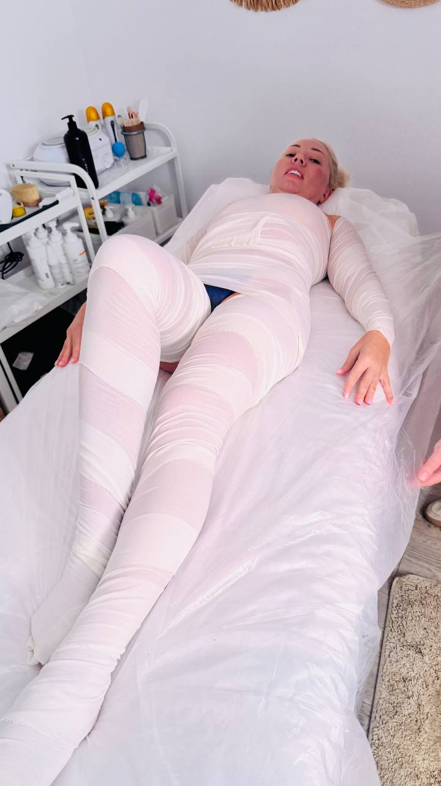
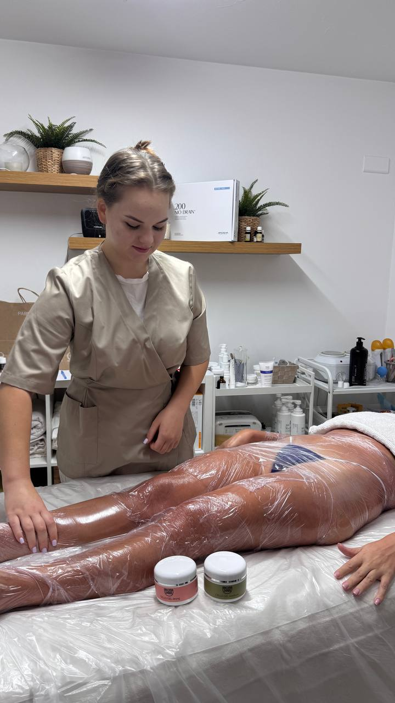
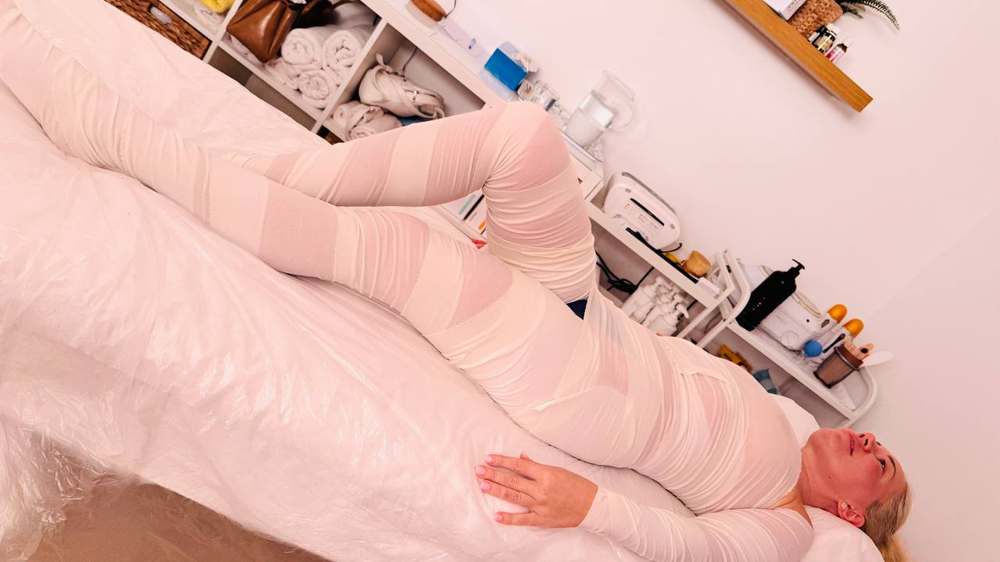
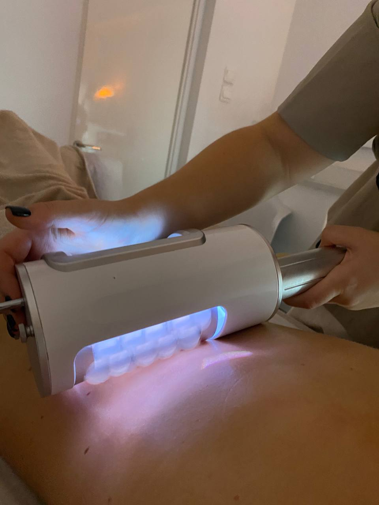

Body Treatments · Limassol
Reduce swelling, firm your skin and reshape your silhouette. Visible results from the very first session — performed by certified specialist Anna Holod.

Body wraps and figure correction at Beauty by Anna Holod are among the most requested services at the studio — and for a very good reason: clients see and feel results immediately. Swelling goes down, skin becomes noticeably firmer, and the body feels lighter after just one treatment.
Our clients tell us: excess water was gone after the very first session. Others say they finally fit into their old jeans after completing a course. Skin became elastic and visibly toned.
All body wrap and figure correction sessions at the studio are performed personally by Anna Holod — the certified founder and owner. She selects the treatment method and active ingredients individually, based on your body's current state and your specific goals.
Each treatment is designed for a specific goal — chosen together with Anna during your first consultation.
Active ingredients — clay, herbal extracts or seaweed — are applied to the body and sealed with thermal film to stimulate fat breakdown, remove toxins and reduce fluid retention. The body loses visible volume after every session.
Targeted wrap for thighs, buttocks and abdomen — the most common problem zones. The combination of active ingredients and thermal effect breaks down cellulite deposits and significantly smooths skin texture over a course of sessions.
Formulated to cleanse deeply and activate lymphatic drainage. Reduces puffiness, improves skin colour and relieves heaviness in the legs. Especially effective in Cyprus's warm climate when fluid retention is common.
Rich in collagen-stimulating and elastin-boosting compounds. Improves skin firmness, restores elasticity and reduces visible sagging — especially after weight loss or postpartum.
Professional treatment using specialised devices that act on deep tissue layers through mechanical action. Targets fat deposits, activates lymphatic flow and visibly tones the skin. Often combined with body wraps for maximum effect.
The most effective approach for body contouring. Massage prepares the skin and improves circulation; the wrap then works on prepared skin for deeper penetration of active ingredients. Our most popular complex treatment.
Body wrap and figure correction treatments at Beauty by Anna Holod are ideal for anyone who wants to see real, measurable changes in their body — not just a temporary feeling of wellness, but an actual visible difference in shape, skin tone and how they feel in their clothes.

Excess water leaves the body, legs feel lighter and less puffy immediately.
Measurable reduction in waist, hip and thigh circumference after a course.
Skin regains elasticity and tone — visibly tighter after just a few sessions.
Regular treatments break down fatty deposits and smooth skin texture in problem zones.
Clients say they finally fit into clothes that felt too tight — a motivating real-life result.
Improved circulation and detoxification translate into more energy and a lighter feeling throughout the day.

Many clients notice visible results after the very first session — reduced swelling, lighter feeling and firmer skin. For sustained, lasting changes in body contour and skin tone, a course of 8–12 sessions is recommended, ideally 2 times per week.
Body wrap is a beauty treatment where active ingredients — such as clay, algae, herbal extracts or mineralised compounds — are applied to the skin and the body is then wrapped in thermal film or bandages. The warmth created increases absorption of the active ingredients, stimulates circulation, promotes lymphatic drainage and helps reduce fluid retention and improve skin elasticity.
Apparatus figure correction is a professional body treatment using specialised devices that work on deeper tissue layers through mechanical or vibration action. It targets fat deposits, improves lymphatic flow, and visibly tones and firms the skin. Often combined with body wraps for enhanced results.
Yes. Body wraps and figure correction are performed in a comfortable, air-conditioned studio environment. They are popular year-round in Cyprus, but especially booked in spring and early summer when clients want to prepare their bodies for beach season.
Absolutely — and we highly recommend it. Massage beforehand prepares the skin, opens pores and improves circulation, allowing the wrap ingredients to penetrate more deeply. Combined sessions deliver faster and more pronounced body shaping results.
Book a body wrap or figure correction session at Beauty by Anna Holod in Limassol. Real results, from your first visit.